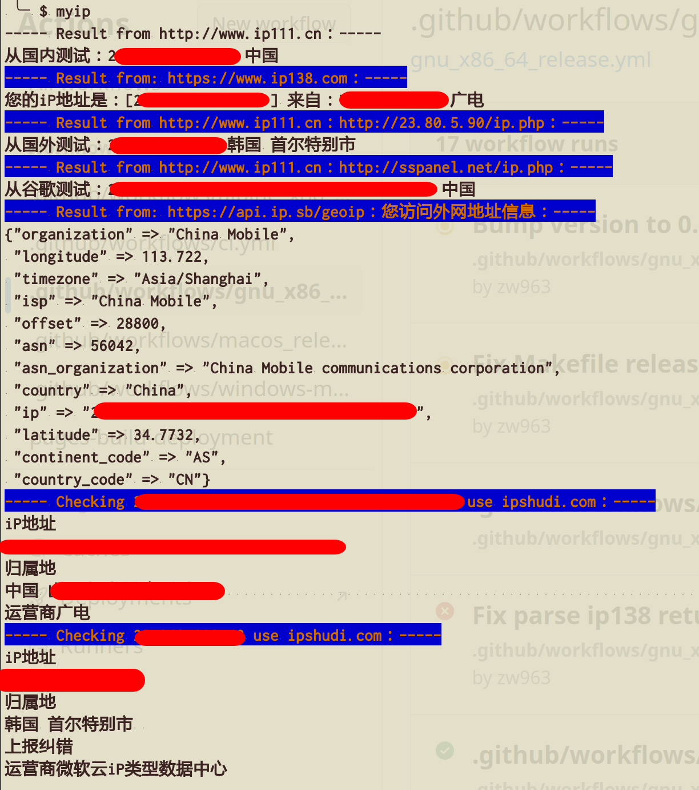

myip
返回本机的公网 IP 以及访问外网的公网 IP，匿名使用以下服务（均无需 API key）：
myip ipify：通过https://api.ipify.org获取 IPv4 地址myip ipify6：通过https://api6.ipify.org获取 IPv6 地址myip cf：通过 Cloudflare trace 获取 IP、机房、国家及连接信息myip ident：通过 ident.me 获取 IP 及地理信息（JSON）myip aws：通过 AWS CheckIP 获取 IP 地址myip akamai：通过 Akamai 获取 IP 地址myip ipsb：通过https://api.ip.sb/geoip获取详细 IP 信息myip ifconfig.io：通过https://ifconfig.io/ip获取 IP 地址myip ifconfig.co：通过https://ifconfig.co/json获取 IP、地理位置及 ASN 信息myip ifconfig.me：通过https://ifconfig.me/all.json获取 IP 及连接信息（JSON）myip icanhazip：通过https://icanhazip.com获取 IP 地址myip httpbin：通过https://httpbin.org/ip获取来源 IP 地址（JSON）myip dyndns：通过http://checkip.dyndns.org获取 IP 地址（HTML）myip ip111：通过https://ip111.cn获取国内、国外及 Google 路径的 IP 信息myip ip138：通过https://www.ip138.com获取国内 IP 信息
IPv6-only 服务需要当前网络具备可用的 IPv6 出口，否则会返回连接错误。
调试
默认情况下，查询失败只会向 STDERR 输出简洁错误。通过 LOG_LEVEL=DEBUG 可以同时查看原始异常和完整堆栈：
LOG_LEVEL=DEBUG myip ipify查询结果仍输出到 STDOUT，spinner、错误和 debug 日志输出到 STDERR。

Contributing
- Fork it (https://github.com/crystal-china/myip/fork)
- Create your feature branch (
git checkout -b my-new-feature) - Commit your changes (
git commit -am 'Add some feature') - Push to the branch (
git push origin my-new-feature) - Create a new Pull Request
Contributors
- Billy.Zheng - creator and maintainer